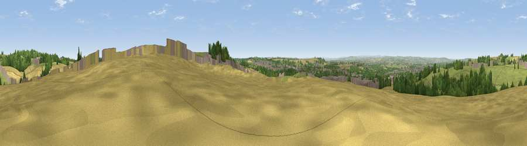

Viewpoint near Hetton-le-Hole
#13628 in England · top 23% of its area beats it · near Hetton-le-HoleThe view, rendered

A 360° render of this exact spot computed from the terrain model, tree cover and land cover — summer colours, afternoon light, calibrated against photographs of famous viewpoints. Real trees, hedges and buildings will differ in detail.
The panorama
Grey silhouette: terrain skyline in each direction (720 bearings, Earth curvature and refraction included). Dashed green: skyline with trees (+15 m) and buildings (+8 m) as obstacles. Blue strip: how far the ground is visible on each bearing.
Where the view opens
Wedge length = distance to the farthest visible ground on that bearing (vegetation-aware). Rings at 10, 25 and 50 km.
What fills the view
38% grassland · 31% cropland · 19% woodland · 11% built-up
Angular shares of the visible panorama (visual magnitude), not map area. Landscape diversity 0.58 (0–1 Shannon).
Key numbers
More beautiful places nearby
The staircase of upgrades: each row has a higher view potential than everything closer. Driving times are estimates from straight-line distance, calibrated against real road routing — check an actual route before setting out.
| Place | Direction | Drive | Score |
|---|---|---|---|
| Viewpoint near Hetton-le-Hole | SE · 0 km | ~1 min | 65.4 |
| Viewpoint near Houghton-le-Spring | NNE · 2 km | ~5 min | 73.7 |
| Viewpoint near Houghton-le-Spring | NE · 2 km | ~6 min | 76.0 |
| Viewpoint near Sunniside | WNW · 17 km | ~29 min | 77.6 |
| Pontop Pike | W · 22 km | ~36 min | 77.8 |
| Viewpoint near Lazenby | SSE · 37 km | ~55 min | 86.4 |
| Warsett Hill | SE · 43 km | ~63 min | 86.8 |
| Viewpoint near Easington | SE · 48 km | ~68 min | 90.2 |
54.83340, -1.43758 · source: screening · position refined by local search. Computed location — check access rights before visiting.